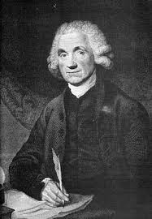

JOSEPH PRISTLEY

Introduction
Joseph Priestley (1733–1804), best remembered for his discovery of the gas that would later be named "oxygen," was ceremoniously welcomed to the United States in 1794 as a leading contemporary thinker and friend of the new republic. Then 61, this Englishman was known to Americans at least as well for his prodigious political and theological writings as for his scientific contributions.
About Pristley
Priestley was educated to be a minister in the churches that dissented from the Church of England, and he spent most of his life employed as a preacher or teacher. He gradually came to question the divinity of Jesus, while accepting much else of Christianity—in the process becoming an early Unitarian.
Priestley was a supporter of both the American and French Revolutions. He saw the latter as the beginning of the destruction of all earthly regimes that would precede the Kingdom of God, as foretold in the Bible. These freely expressed views were considered seditious by English authorities and many citizens. In 1791 a mob destroyed his house and laboratory in Birmingham. This episode and subsequent troubles made him decide to emigrate to the United States. With his sons he planned to set up a model community on undeveloped land in Pennsylvania, but like many such dreams, this one did not materialize. He and his wife did, however, build a beautiful home equipped with a laboratory far up the Susquehanna River in Northumberland, Pennsylvania.
Pristley's work
Priestley’s first scientific work, The History of Electricity (1767), was encouraged by Benjamin Franklin, whom he had met in London. In preparing the publication Priestley began to perform experiments, at first merely to reproduce those reported in the literature but later to answer questions of his own. In the 1770s he began his most famous scientific research on the nature and properties of gases. At that time he was living next to a brewery, which provided him an ample supply of carbon dioxide. His first chemical publication was a description of how to carbonate water, in imitation of some naturally occurring bubbly mineral waters. Inspired by Stephen Hales’s Vegetable Staticks (first edition, 1727), which described the pneumatic trough for gathering gases over water, Priestley began examining all the “airs” that might be released from different substances. Many, following Aristotle’s teachings, still believed there was only one “air.” By clever design of apparatus and careful manipulation, Priestley isolated and characterized eight gases, including oxygen—a record not equaled before or since. In addition, he contributed to the understanding of photosynthesis and respiration.
Priestley fought a long-running battle with Antoine-Laurent Lavoisier and his followers over how to interpret the results of experiments with gases. Priestley interpreted them in terms of phlogiston—the hypothetical principle of flammability that was thought to give metals their luster and ductility and was widely used in the early 18th century to explain combustion, calcination, smelting, respiration, and other chemical processes. Proponents of phlogiston did not consider it to be a material substance, so it was therefore unweighable. Priestley gave qualitative explanations of these phenomena, talking, for example, about oxygen as “dephlogisticated air.”
References
http://www.chemheritage.org/discover/online-resources/chemistry-in-history/themes/early-chemistry-and-gases/priestley.aspx